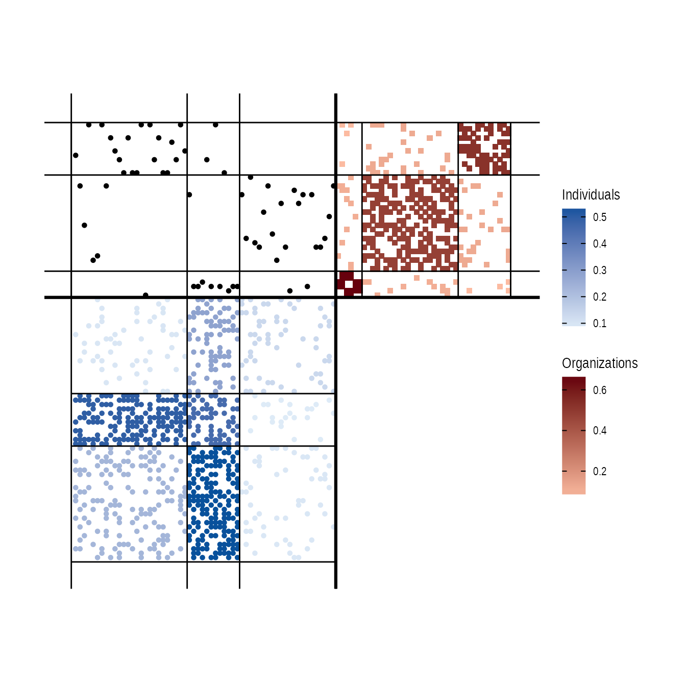
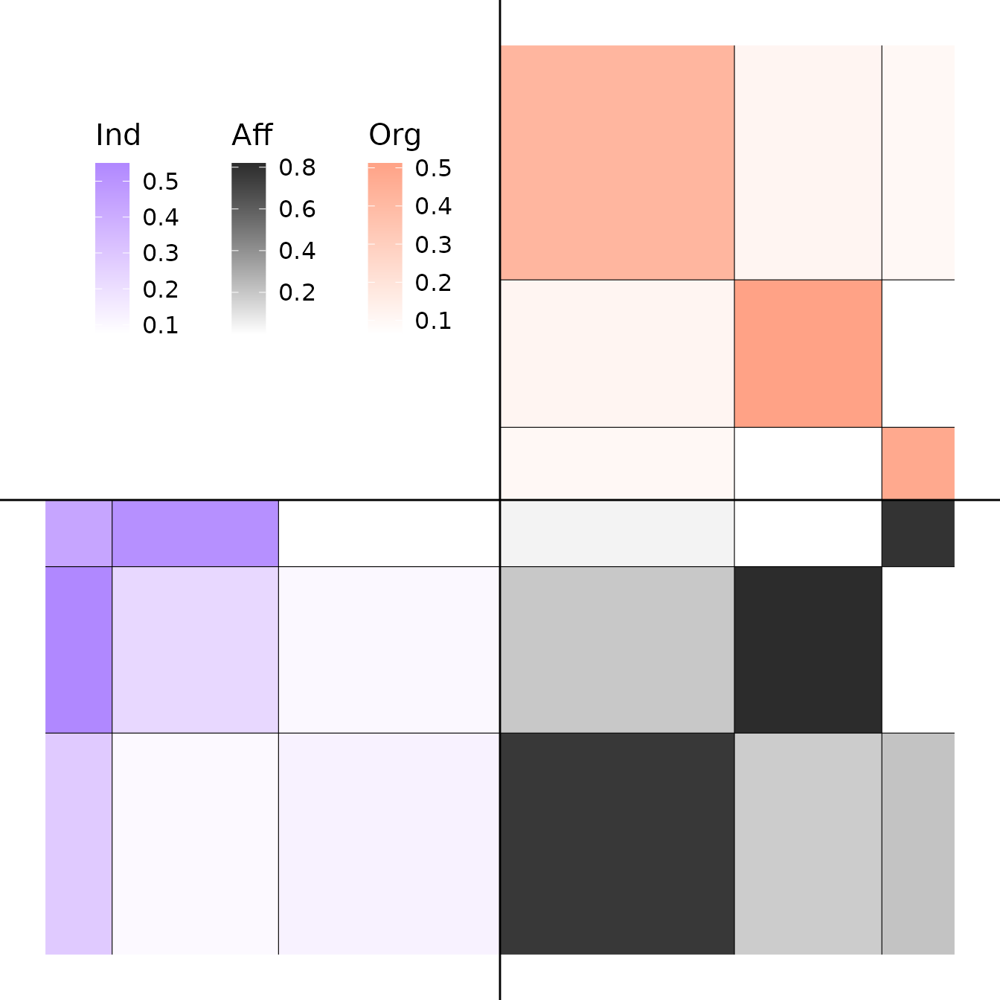

The package deals with multilevel network defined as the junction of two interaction network (adjacency matrices) linked by an affiliation relationship (affiliation matrix).
First, we’re going to simulate a multilevel network with 100 individuals and 3 clusters of individuals for the lower level and 50 organizations and 3 clusters for the upper level. The inter-organizational level will have an assortative structure and will be undirected, the inter-individual’s one a core-periphery structure and will be directed. Affiliation matrix will be generated by a power law and the dependency between the latent blocks of the two levels will be strong.
set.seed(123)
my_mlvsbm <- MLVSBM::mlvsbm_simulate_network(
n = list(I = 60, O = 40), # Number of nodes for the lower level and the upper level
Q = list(I = 3, O = 3), # Number of blocks for the lower level and the upper level
pi = c(.5, .3, .2), # Block proportion for the upper level, must sum to one
gamma = matrix(c(.8, .2, .05, # Block proportion for the lower level,
.1, .7, .05,
.1, .1, .9), # each column must sum to one
nrow = 3, ncol = 3, byrow = TRUE),
alpha = list(I = matrix(c(.1, .1, .3,
.1, .2, .5,
.1, .5, .5),
nrow = 3, ncol = 3, byrow = TRUE), # Connection matrix
O = matrix(c(.4, .1, .1,
.1, .5, .1,
.1, .1, .6),
nrow = 3, ncol = 3, byrow = TRUE)),# between blocks
directed = list(I = TRUE, O = FALSE), # Are the upper and lower level directed or not ?
affiliation = "preferential", # How the affiliation matrix is generated
no_empty_org = FALSE) # May the affiliation matrix have column suming to 0The network is stocked in an R6 object of type
MLVSBM.
Now, we are going to create a multilevel network object from 2 existing adjacency matrix and an affiliation matrix :
lower_level <- my_mlvsbm$adjacency_matrix$I # matrix of size nI x nI
upper_level <- my_mlvsbm$adjacency_matrix$O # matrix of size nO x nO
affiliation <- my_mlvsbm$affiliation_matrix # matrix of size nI x nO
my_mlvsbm2 <- MLVSBM::mlvsbm_create_network(X = list(I = lower_level, O = upper_level),
A = affiliation)We can now infer the parameters, blocks and edge probabilities of our
network by using the mlvlsbm_estimate_network() function on
an MLVSBM object. It will return the best model for this
network as another R6 object of type FitMLVSBM.
fit <- MLVSBM::mlvsbm_estimate_network(my_mlvsbm, nb_cores = 1L)
#>
#>
[1] "Infering lower level :"
#> [1] "# blocks: 3, ICL = -1655.8359386786 !"
#>
#>
[1] "Infering upper level :"
#> [1] "# blocks: 2, ICL = -420.684670029562 !"
#> [1] "======= # Individual clusters : 3 , # Organisation clusters 2, ICL : -2063.85683091935========"
#> [1] "======= # Individual blocks : 3 , # Organizational blocks 3, ICL : -2058.09881304806========"
#> [1] "======= # Individual blocks : 3 , # Organizational blocks 3, ICL : -2058.09881304806========"
#> [1] "ICL for independent levels : -2076.52060870816"
#> [1] "ICL for interdependent levels : -2058.09881304806"
#> [1] "=====Interdependence is detected between the two levels!====="Generic functions are provided to print, plot, extract the model parameters and predict the existence of a dyad for the fitted network.
print(fit)
#> Multilevel Stochastic Block Model -- bernoulli variant
#> =====================================================================
#> Dimension = ( 60 40 ) - ( 3 3 ) blocks.
#> =====================================================================
#> * Useful fields
#> $independent, $distribution, $nb_nodes, $nb_clusters, $Z
#> $membership, $parameters, $ICL, $vbound, $X_hat
plot(fit, type = "matrix", order = "affiliation")
#> Coordinate system already present. Adding new coordinate system, which will replace the existing one.
plot(fit, type = "matrix", order = "degree")
#> Coordinate system already present. Adding new coordinate system, which will replace the existing one.
coef(fit)
#> $alpha
#> $alpha$I
#> [,1] [,2] [,3]
#> [1,] 0.12293532 0.2819931 0.09635975
#> [2,] 0.07386392 0.4333302 0.51825257
#> [3,] 0.09999992 0.5501422 0.22674572
#>
#> $alpha$O
#> [,1] [,2] [,3]
#> [1,] 0.48071485 0.06410151 0.0980675
#> [2,] 0.06410151 0.51210142 0.1111621
#> [3,] 0.09806750 0.11116206 0.4187204
#>
#>
#> $pi
#> $pi$O
#> [1] 0.1598965 0.3244108 0.5156927
#>
#> $pi$I
#> [1] 0.4872371 0.1466950 0.3660679
#>
#>
#> $gamma
#> [,1] [,2] [,3]
#> [1,] 2.111935e-01 1.809345e-01 0.76551586
#> [2,] 7.888031e-01 1.423899e-06 0.03988353
#> [3,] 3.356466e-06 8.190640e-01 0.19460061
pred <- predict(fit)Output of the algorithm are stocked in the MLVSBM and
FitMLVSBM objects. The MLVSBM object stocks
information of the observed or simulated network and a list of all the
fitted SBM and MLVSBM models.
my_mlvsbm$ICL # A data frame of the inferred models
#> index Q_I Q_O ICL
#> 1 1 3 2 -2063.857
#> 2 2 3 3 -2058.099
my_fit <- my_mlvsbm$fittedmodels[[which.max(my_mlvsbm$ICL$ICL)]] # The fitted model with index the highest ICL
my_mlvsbm$ICL_sbm # The ICL of the SBM
#> $lower
#> [1] -Inf -Inf -1655.836 -Inf -Inf -Inf -Inf
#> [8] -Inf -Inf -Inf
#>
#> $upper
#> [1] -Inf -420.6847 -Inf -Inf -Inf -Inf -Inf
#> [8] -Inf -Inf -Inf
my_sbm_lower <- my_mlvsbm$fittedmodels_sbm$lower[[3]] # A fitted SBM for the lower level with 3 blocks
my_sbm_upper <- my_mlvsbm$fittedmodels_sbm$upper[[2]] # A fitted SBM for the upper level with 2 blocksYou can also get the parameters and the clustering of the fitted
model from the FitMLVSBM object as follows:
fit$parameters # The connectivity and membership parameters of the model
#> $alpha
#> $alpha$I
#> [,1] [,2] [,3]
#> [1,] 0.12293532 0.2819931 0.09635975
#> [2,] 0.07386392 0.4333302 0.51825257
#> [3,] 0.09999992 0.5501422 0.22674572
#>
#> $alpha$O
#> [,1] [,2] [,3]
#> [1,] 0.48071485 0.06410151 0.0980675
#> [2,] 0.06410151 0.51210142 0.1111621
#> [3,] 0.09806750 0.11116206 0.4187204
#>
#>
#> $pi
#> $pi$O
#> [1] 0.1598965 0.3244108 0.5156927
#>
#> $pi$I
#> [1] 0.4872371 0.1466950 0.3660679
#>
#>
#> $gamma
#> [,1] [,2] [,3]
#> [1,] 2.111935e-01 1.809345e-01 0.76551586
#> [2,] 7.888031e-01 1.423899e-06 0.03988353
#> [3,] 3.356466e-06 8.190640e-01 0.19460061
fit$Z # The block membership of each nodes
#> $I
#> I1 I2 I3 I4 I5 I6 I7 I8 I9 I10 I11 I12 I13 I14 I15 I16 I17 I18 I19 I20
#> 3 1 1 3 1 2 3 2 3 1 3 1 1 3 1 1 3 3 1 3
#> I21 I22 I23 I24 I25 I26 I27 I28 I29 I30 I31 I32 I33 I34 I35 I36 I37 I38 I39 I40
#> 3 3 1 3 1 1 3 3 3 3 1 2 2 2 3 1 1 1 1 1
#> I41 I42 I43 I44 I45 I46 I47 I48 I49 I50 I51 I52 I53 I54 I55 I56 I57 I58 I59 I60
#> 2 3 3 3 1 2 3 1 1 1 1 3 1 3 2 2 2 3 1 1
#>
#> $O
#> O1 O2 O3 O4 O5 O6 O7 O8 O9 O10 O11 O12 O13 O14 O15 O16 O17 O18 O19 O20
#> 2 3 3 3 1 3 1 1 2 3 2 2 2 3 3 3 3 2 2 3
#> O21 O22 O23 O24 O25 O26 O27 O28 O29 O30 O31 O32 O33 O34 O35 O36 O37 O38 O39 O40
#> 3 2 3 2 3 3 1 1 1 3 3 2 3 2 3 3 2 3 3 2
fit$vbound # A vector of the varational bound of the VEM algorithm
#> [1] -2012.868 -2007.679 -2005.630 -2002.251 -1999.160 -1997.183 -1996.254
#> [8] -1995.334 -1994.280 -1993.442 -1992.571 -1989.254 -1986.072 -1984.440
#> [15] -1983.596 -1983.331 -1983.263 -1983.245 -1983.239 -1983.238 -1983.237
#> [22] -1983.237 -1983.237 -1983.237 -1983.237 -1983.237 -1983.237 -1983.237
#> [29] -1983.237 -1983.237 -1983.237 -1983.237 -1983.237
tau <- fit$membership # The variational parameters of the model
pred <- fit$X_hat # The links predictions for each level